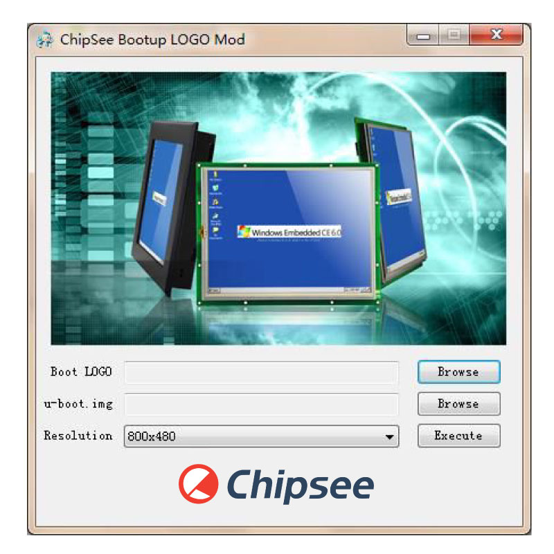

This manual is used to provide users with a fast guide of Chipsee Industrial Computers (Abbreviated as IPC) about Android OS development. Through this manual, users can quickly understand the hardware resources; users can build a complete compilation of Android development environment; users can debug Android OS via serial, USB OTG and Internet.
Prebuilt files for the various industrial PCs can be found in the OS Downloads.
Below are the links to the prebuilt files for each industrial PC model.
Chipsee IPC supports booting from an integrated eMMC or an external TF Card (also known as the micro SD card).
Booting from the external TF Card allows flashing the system OS.
Note
The operator should use the prebuilt file we provided in the CD to test the hardware before re-flashing the system.
You can get the Prebuilt Files Package for each model from links mentioned at the beginning of this documentation.
You can also get the Prebuilt Files Package from the DVD in /Android/Prebuilds folder. However, it may be outdated so always
compare the versions (the last number in the filename is the release date).
The default zImage and imx6q-sabresd.dtb files support ‘keep the logo from uboot to kernel’ but do not support framebuffer.
Chipsee provides zImage_framebuffer and imx6q-eisd.dtb_framebuffer file versions that support the framebuffer function but do
not support the ‘keep the logo from uboot kernel’ feature. If you need the framebufer, just rename these two files to zImage
and imx6q-eisd.dtb.
The Prebuilt Files Package has a shell tool that can help create a bootable SD card using a Linux platform (such as desktop PC or Virtual
Machine running Ubuntu 14.04 distribution).
Use the SD Card to download the bootable system image onto the Linux platform and follow the steps below to create a bootable SD card:
Copy the Prebuilt Files Package to a Linux environment (such as Ubuntu 14.04).
Insert the SD card into your computer. If you are using virtual machines, please ensure the SD card is mounted to the Linux operating system.
Confirm the SD card mount point, /dev/sdX，(e.g., /dev/sdc or /dev/sdb, be sure to use the right one). In a Linux system, you can use the command below to find out what X is.
$ sudo fdisk –l
Copy the prebuilt-jb-hmi-XXXX.tar.gz to somewhere(such as $HOME).
Extract the prebuilt-jb-hmi-XXXX.tar.gz
$ tar -xzvf prebuilt-jb-hmi-XXXX.tar.gz
Go to the folder
$ cd ~/Prebuilt-cs-androidXXXXX/prebuilt-sd/
Use the following command to flash the Android OS to the SD card
$ sudo ./mkmmc-android.sh --device /dev/sd<?>
Note
sd<?> means the SD card mount point, (e.g., /dev/sdc or /dev/sdb) in Ubuntu system.
The recommended SD card should be Sandisk Class4 level SD card or above.
The bootable SD Card is now ready. Power OFF the industrial PC and insert the SD Card.
Connect the industrial PC to PC via COM1. Power ON the IPC.
After 20 minutes, if the LED on industrial PC stays lit, flashing is completed. Using COM1, you can also find this message >>>>>>> eMMC Flashing Completed <<<<<<< which indicates that the system image was downloaded correctly to the eMMC.
Power OFF the IPC and set the DIP switch to eMMC BOOT mode. (refer to DIP Switch Configuration above)
The Prebuilt Files Package has a shell tool that can help create a bootable NAND card using a Linux platform (such as desktop PC or Virtual
Machine running Ubuntu 14.04 distribution).
Follow the steps below to create a bootable NAND card:
Copy the Prebuilt Files Package to a Linux environment (such as Ubuntu 14.04).
Insert the SD card into your computer. If you are using virtual machines, please ensure the SD card is mounted to the Linux operating system.
Confirm the SD card mount point, /dev/sdX，(e.g., /dev/sdc or /dev/sdb, be sure to use the right one). In a Linux system, you can use the command below to find out what X is.
$ sudo fdisk –l
Copy the prebuilt file prebuilt-jb-hmi-XXXX.tar.gz to somewhere(such as $HOME).
Extract the prebuilt file prebuilt-jb-hmi-XXXX.tar.gz
$ tar -xzvf prebuilt-jb-hmi-XXXX.tar.gz
Go to the folder prebuilt-jb-hmi-XXXX/prebuilt-nand/
$ cd ~/prebuilt-jb-hmi-XXXX/prebuilt-nand/
Use the following command to flash the Android OS to the NAND card
Connect the industrial PC to PC via COM1. Power ON the IPC.
After 20 minutes, if the LED on industrial PC stays lit, flashing is completed. Using COM1, you can also find this message >>>>>>> eMMC Flashing Completed <<<<<<< which indicates that the system image was downloaded correctly to the eMMC.
Power OFF the IPC and set the DIP switch to eMMC BOOT mode. (refer to DIP Switch Configuration above)
The first time you start Android OS on the industrial PC will take a little time. But after the first time, Android OS will start quickly.
When the Android OS starts up, you will see the Chipsee Logo on the LCD screen.
It is a successful start if you see the Android OS desktop such as the one shown in the figure below:
Run MultiTouch Tester App.
The screen will show the number and position of the touch point when touching the screen.
Note
Resistive screen expansion board only supports single-touch, and capacitive screen expansion board supports five-point touch as described in the figure below.
After working for some time, the resistive touch screen may not be accurate. The user must run a touch screen calibration test.
Run Chipsee TouchCal App as described in the figure below.
Figure 614: Touch screen calibration test (Resistive touch)¶
You can test the gravity sensor by whirling the screen.
Run SensorList App.
In the “Analog Device 3 axis accelerometer” option, you can see real-time changes of the three-axis acceleration value curve, as shown on the figure below.
You can also test gravity using a gravity sensing game, such as “NFS shift” or “Tilt 3D laby”. If you use “NFS shift”, please run the ChipseeSensorTool app to adjust the direction of the axis by selecting “Invert X-axis” and “Swap X/Y axes”. If you use other games, please adjust the settings as default.
Insert the microphone and earphones into the Audio IO interface (Audio IN coloured pink, Audio OUT coloured light blue).
Start Talking Tom App (Tom Cat).
Speak into the microphone, Tom the cat will repeat spoken content.
Chipsee® provides a software to change the OS boot up logo. The software ChipSee_LOGO_MOD_EN.exe is provided on the CD for a product.
To change the logo, follow these steps:
Open the software: Chipsee_LOGO_MOD_EN.exe in Windows

Figure 621: Chipsee OS Boot-up Logo Modify Software¶
Click the first Browse button. Select the picture file you want to use as the logo.
Inputting wrong details could harm the industrial PC and because of that you should backup the file before making any changes. This can help you reverse changes easily if an error occurs.
In this section, we will discover how to view the Android system via the serial port and debug the system via USB OTG.
Also, we will discover how to install and uninstall applications via USB OTG.
The following operation is under the Windows 7 x64 environment, similar to other Windows platforms.
Install the SecureCRT or Putty software on a Windows 7 PC to view the Android system via the serial ports.
Follow these steps to view Android system via the serial port:
Connect COM1 on the industrial PC board to Windows 7 PC.
Open the SecureCRT or Putty software on the Windows 7 PC.
Power ON the industrial PC. You will see the serial output information as shown on the figure below.
If the # prompt appears at the beginning of the command line, it means we connected the industrial PC with the Windows 7 PC successfully as shown on the figure below.
Now you can use Linux commands like ls, cd and so on. Press Ctrl + C to exit the shell and return to the Windows system.
Use the adb command to install an Android App: for example SogouInput.apk. If there is a SUCCESS message, as shown on the figure below, then the app installation was successful.
The Ethernet port on the industrial PC and the host machine (Windows 7 PC) should connect to the network. Check Ethernet configuration for the industrial PC using the command below.
In this section, we will introduce the development of an Android app with Eclipse on Windows. We assume that the USB is OTG model and the driver is already installed. (See Adb connect via USB OTG)
Click on the Next button until the app project is created. Connect the industrial PC to Windows 7 PC via the USB cable (A-A). If the connection is successful, you will see the device in the DDMS window (Windows–>Open Perspective–>Other–>DDMS)
If the USB is not configured as an OTG model, you can copy and install the file HelloWorld.apk from the project folder HelloWorld/bin/, or install the HelloWorld.apk via the internet (See Adb connect via internet).
Please feel free to contact us with any questions, queries or suggestions.
If your question is related to technical support or troubleshooting for one of our products, we kindly ask you to check our documentation for a possible solution first.
If you still cannot find the solution you are looking for, please write to Chipsee Technical Support at service@chipsee.com, providing all relevant information.
Disclaimer:
Chipsee assumes no responsibility for any errors that may occur in this manual. Furthermore, Chipsee reserves the right to alter hardware, software,
and/or specifications set forth herein at any time without prior notice, and undertakes no obligation to update the information contained in this document.
Chipsee products are not authorized for use as critical components in life support devices or systems.